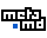

-
Chargement…
Écrivez-le comme vous voulez, espaces et accents compris. Le dossier sera data/CORPUS/…/. Les documents s'ajoutent ensuite depuis la page du corpus.
data/CORPUS/…/
Ce choix est fixé à la création : il décide de la façon dont les documents entrent dans le corpus, et ne change plus ensuite.
Créer